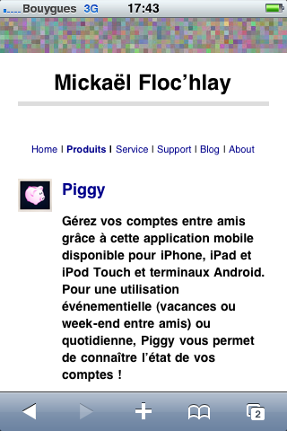
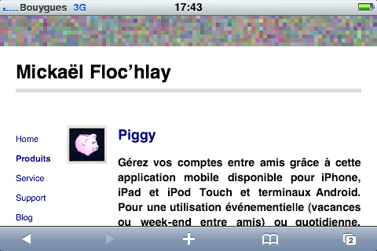

Adapter un site SPIP à un terminal mobile
Le site vient d’être mis à jour et utilise un thème et un squelette ZPIP pour SPIP qui permet un rendu adapté aux dimensions de l’écran du terminal utilisé pour le consulter.
J’en parlais ici, j’ai mis à jour ce site en utilisant le triple principe de fluid grids, fluid images et media queries.
Pour cela j’ai créé un thème et un squelette ZPIP qui utilisent des outils communs à la plupart des webmasters :
- Feedburner pour le flux RSS;
- les derniers tweets d’un compte Twitter pour dynamiser le contenu du site;
- Google Analytics pour la mesure d’audience.
Pour améliorer le graphisme du site, j’ai aussi utilisé :
- ce set de sketched icons;
- cet autre set de sketched icons;
- l’application iPhone ShakeItPhoto pour donner un rendu sympa aux icônes.
Le même site pour consultation sur iPhone
Ainsi, avec une instance de SPIP et sans configuration Apache, le contenu du site s’adapte automatiquement aux dimensions de l’écran sur lequel il est consulté. Voici par exemple le rendu de la home page sur un iPhone en orientation portrait et en orientation paysage :


À propos de ZPIP
J’utilise donc le plugin ZPIP pour le CMS SPIP pour lequel j’ai créé un thème et un squelette. Je viens de mettre à disposition ces 2 composants, pour le moment destinés à fonctionner ensemble. Vous pouvez donc les utiliser dès maintenant pour votre site ! Pour cela, cliquer ici !
N’hésitez pas à me fournir vos remarques à son sujet sachant que j’ai déjà identifié quelques bugs que je corrigerai bientôt dans une seconde version :
- le formulaire de recherche est absent de la version mobile (ne trouvant pas de façon agréable de l’intégrer, j’ai choisi de ne pas l’afficher pour le moment, ce sera fait bientôt);
- premier espace de taille aléatoire pour les listes quand le texte est justifié;
- le zoom n’est plus possible sur Safari pour iOS;
- le site désactive le rendu des flux syndiqués dans SPIP.
Après publication de ce post, Joseph commentait :
Bonjour, ceci est très intéressant. Deux petites questions :
- Le thème développé peut-il fonctionner indépendamment de votre squelette. Autrement dit, le thème fonctionne-t-il avec un Zpip de base ?
- Pensez-vous qu’il soit difficile d’adapter des thèmes déjà existants afin qu’ils s’affichent correctement sur un navigateur mobile ? Quels sont les éléments à prendre en compte ? Cela pourrait faire l’objet d’une magnifique contribution sur SPIP-Contrib (Comment adapter un thème Zpip aux navigateurs mobiles).\r\n\r\nBien cordialement et au plaisir de vous lire prochainement
Ma réponse :
Merci pour le commentaire. En ce qui concerne les réponses à vos questions :
- le thème seul peut fonctionner avec un ZPIP de base mais le rendu visuel sera loin d’être parfait, c’est pour cela que pour le moment le thème et le squelette sont distribués ensemble. Le thème sera probablement bientôt soumis à la communauté de la SPIP Zone qui pourra m’aider à le rendre plus performant et plus indépendant du squelette.
- en ce qui concerne l’adaptation de thèmes existants pour un bon rendu sur mobile, il est difficile d’estimer les efforts nécéssaires sans connaître la qualité du thème existant : tout dépend de celle-ci. Néanmoins, quelques best practices existent et pourraient faire l’objet d’une contribution sur SPIP-contrib : j’y réfléchirai moi-même dans les semaines qui viennent. Merci de cette suggestion. (Si vous pensez à l’adaptation d’un thème en particulier, n’hésitez pas à me contacter via le formulaire de contact, je pourrai peut-être vous aider)